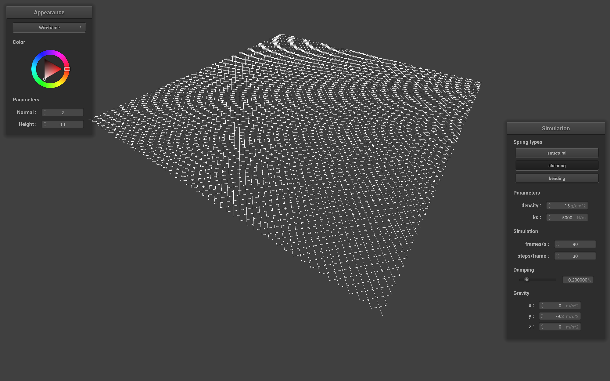
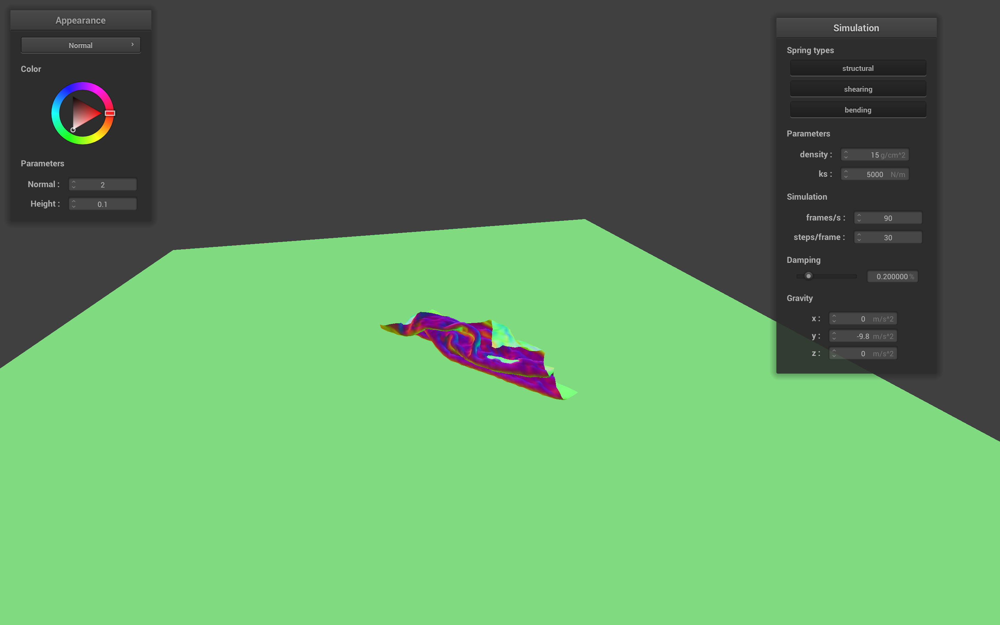
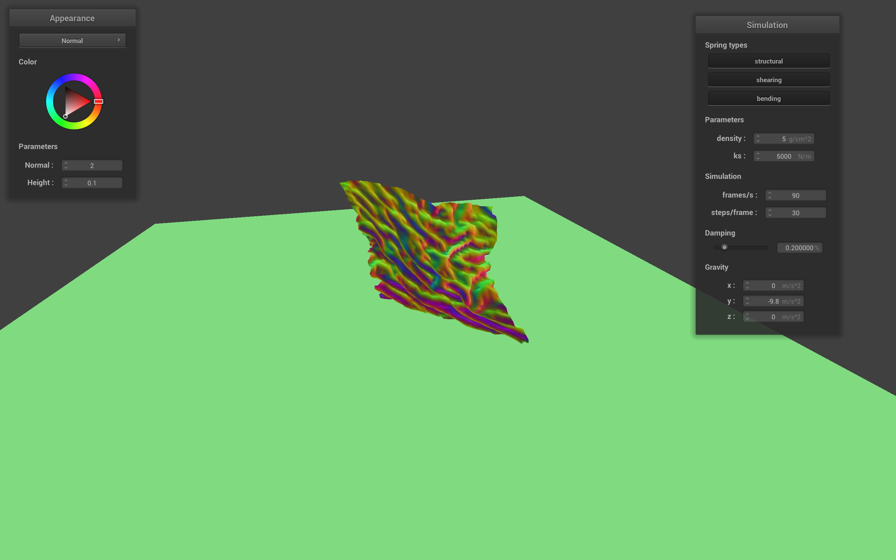

Overview
This assignment implements the end to end process of creating a model that acts on external/internal forces, colliding with objects, and colliding with itself. Additionally,
in the assignment we shade, texture, and give mapping properties to each dynamic shape.
Part I: Masses and springs
|
All Constraints
|
Only Structural
|
|

Only Shearing
|
Only Bending
|
Part II: Simulation via numerical integration
When modifying the spring constant ks, a lower ks a smoother bend between points in the cloth while
a higher ks creates more impurities. An analogy this can be related to is using an elastic/rubber parachute over using something like a cloth parachute. The cloth parachute will fold in some places while the
rubber parachute will have a smoother surface.
|
Low KS (20)
|
High KS (20000)
|
When modifying the damping value, a lower damping value the cloth did not fall as uniformly as it did if it had a higher damping value.
Additionally, the cloth was very stiff when the cloth fell with a higher damping value. As partially evident from the below photos, the higher damped cloth
has far less "wrinkles" than the lower damped cloth.
|
Lower Damp Value (0.103%)
|
Higher Damp Value (0.59%)
|
When modifying the density, a lower density appears to fall a little faster and has more bounce than a higher density. This is not too evident in our case as we
do not utilize this variable in thie step.
|
Low Density (10)
|
High Density (1e17 *for testing purposes)
|
4 Pinned Cloth with Standard Params
Part III: Handling collisions with other objects
The main difference we see is the elastisity of the cloth. As we increase the spring constant,
the cloth droops lower past the sphere.
|
Low KS (15)
|
Medium KS (500)
|
High KS (5000)
|
Plane w/ Default Params
Part IV: Handling self-collisions
|
Initial
|
Middle
|

Near End
|
With a higher density, the cloth falls more uniformly than if it has a lower density. On the
other hand, a cloth with a lower spring constant falls more uniformly than a cloth with a higher one.
|

Low Density
|
High Density
|
Part V: Cloth Sim
Shader Program
Shader programs run in parallel with the physical renderer to provide color values for the
triangle (RGBA) given the lighting and texture mapping in the scene and general screen position (like which pixel on the screen will this color populate).
There are two types of shader programs, vertex shaders and fragment shaders.
Vertex shaders manage the mapping from the 3D world to the 2D space on our screen. Fragment Shaders determine the color given the lighting and texture.
As a result, the shader programs effictively provides the depth for our 3D models given the models created from the renderer.
Blinn-Phong Shading Model
The Blinn-Phong Shading model is comprised of three main components: ambient light, diffuse light, and specular light. Combining the three creates
an overall realistic looking object incorporating what we usually see in everyday life.
- Ambient Light: The color of the object as revealed by the intensity of the light.
- Diffuse Light: Provides reflection to the object, incorporating shadows giving the object a matte feel.
- Specular Light: Provides light intensity and camera (or viewer) position to determine actual reflectance
|
Only Ambient
|
Only Diffuse
|
|
Only Specular
|
All
|
Custom Texture
|
Cloth and Sphere Bump
|
Sphere Displacement
|
Changing the coarseness of the shape changes the sensitivity of the texture on the position in the shape. More formally, the more black (or white) the pixel is,
the more it will extrude away from the shape when the coarseness is high.
|
-o 16 -a 16 (Displacement)
|
-o 128 -a 128 (Displacement)
|
|
-o 16 -a 16 (Bump)
|
-o 128 -a 128 (Bump)
|
Mirror